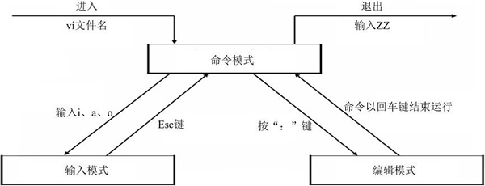
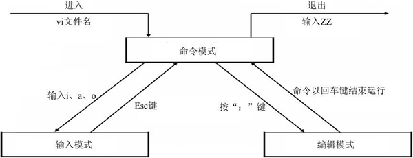

Linux Vim三种工作模式（命令模式、输入模式和编辑模式）详解
通过前面的学习我们知道，Linux 系统中所有的内容都以文件的形式进行存储，当在命令行下更改文件内容时，常会用到文本编辑器。
我们首选的文本编辑器是 Vim（至于为什么，可查看《Vi和Vim的区别和联系》一节）。使用 Vim 编辑文件时，存在 3 种工作模式，分别是命令模式、输入模式和编辑模式，这 3 种工作模式可随意切换，如图 1 所示。

图 1 Vim 的三种工作模式
图 2 所示是在 CentOS 6.x 系统中 Vim 处于命令模式的状态示意图。
图 2 Vim 处于命令状态
使 Vim 进行输入模式的方式是在命令模式状态下输入 i、I、a、A、o、O 等插入命令（各指令的具体功能如表 3 所示），当编辑文件完成后按 Esc 键即可返回命令模式。
图 4 所示即为 Vim 处于输入模式状态下的示意图。

图 4 Vim 处于输入模式
使 Vim 切换到编辑模式的方法是在命令模式状态下按“：”键，此时 Vim 窗口的左下方出现一个“：”符号，这是就可以输入相关指令进行操作了。
图 4 Vim 进行编辑模式
对于新手来说，经常不知道自己处于什么模式。不论是自己忘了，还是不小心切换了模式，都可以按一次 Esc 键返回命令模式。如果你多按几次 Esc 键后听到"嘀————"的声音，则代表你已经处于命令模式了。
我们首选的文本编辑器是 Vim（至于为什么，可查看《Vi和Vim的区别和联系》一节）。使用 Vim 编辑文件时，存在 3 种工作模式，分别是命令模式、输入模式和编辑模式，这 3 种工作模式可随意切换，如图 1 所示。

图 1 Vim 的三种工作模式
Vim的命令模式
使用 Vim 编辑文件时，默认处于命令模式。此模式下，可使用方向键（上、下、左、右键）或 k、j、h、i 移动光标的位置，还可以对文件内容进行复制、粘贴、替换、删除等操作。图 2 所示是在 CentOS 6.x 系统中 Vim 处于命令模式的状态示意图。
图 2 Vim 处于命令状态
Vim的输入模式
在输入模式下，Vim 可以对文件执行写操作，类似于在 Windows 系统的文档中输入内容。使 Vim 进行输入模式的方式是在命令模式状态下输入 i、I、a、A、o、O 等插入命令（各指令的具体功能如表 3 所示），当编辑文件完成后按 Esc 键即可返回命令模式。
| 快捷键 | 功能描述 |
|---|---|
| i | 在当前光标所在位置插入随后输入的文本，光标后的文本相应向右移动 |
| I | 在光标所在行的行首插入随后输入的文本，行首是该行的第一个非空白字符，相当于光标移动到行首执行 i 命令 |
| o | 在光标所在行的下面插入新的一行。光标停在空行首，等待输入文本 |
| O | 在光标所在行的上面插入新的一行。光标停在空行的行首，等待输入文本 |
| a | 在当前光标所在位置之后插入随后输入的文本 |
| A |
在光标所在行的行尾插入随后输入的文本，相当于光标移动到行尾再执行a命令 |
图 4 所示即为 Vim 处于输入模式状态下的示意图。
图 4 Vim 处于输入模式
Vim 的编辑模式
编辑模式用于对文件中的指定内容执行保存、查找或替换等操作。使 Vim 切换到编辑模式的方法是在命令模式状态下按“：”键，此时 Vim 窗口的左下方出现一个“：”符号，这是就可以输入相关指令进行操作了。
指令执行后 Vim 会自动返回命令模式。如想直接返回命令模式，按 Esc 即可。
图 4 所示为 Vim 进入编辑模式后的状态。图 4 Vim 进行编辑模式
对于新手来说，经常不知道自己处于什么模式。不论是自己忘了，还是不小心切换了模式，都可以按一次 Esc 键返回命令模式。如果你多按几次 Esc 键后听到"嘀————"的声音，则代表你已经处于命令模式了。
关注公众号「站长严长生」，在手机上阅读所有教程，随时随地都能学习。内含一款搜索神器，免费下载全网书籍和视频。

微信扫码关注公众号